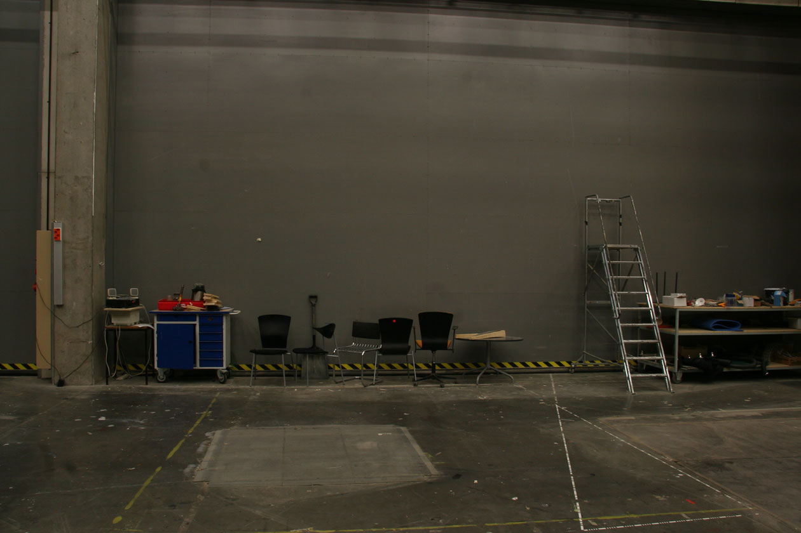
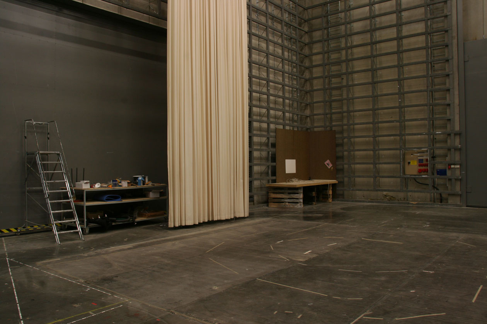
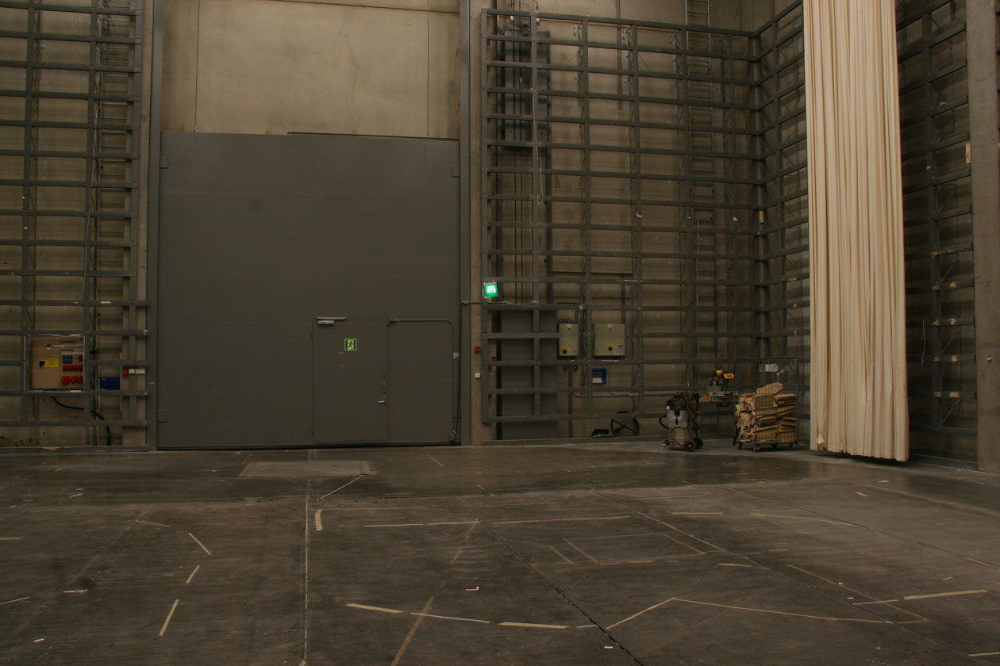
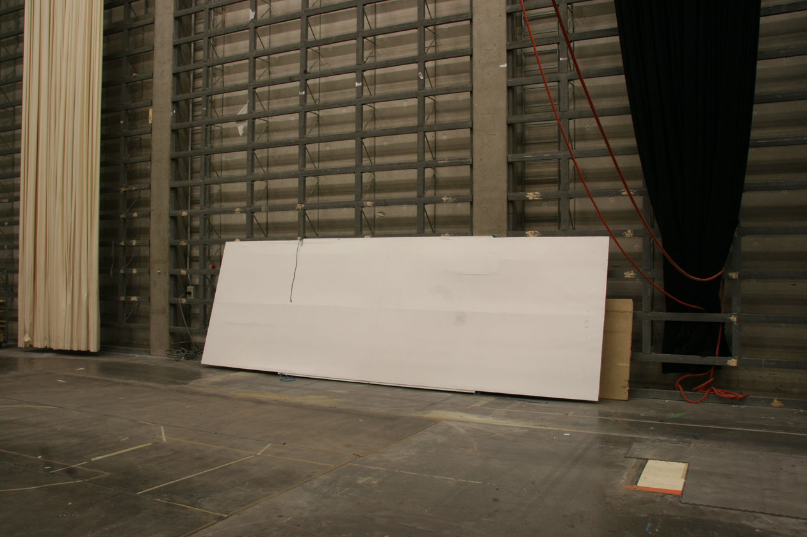
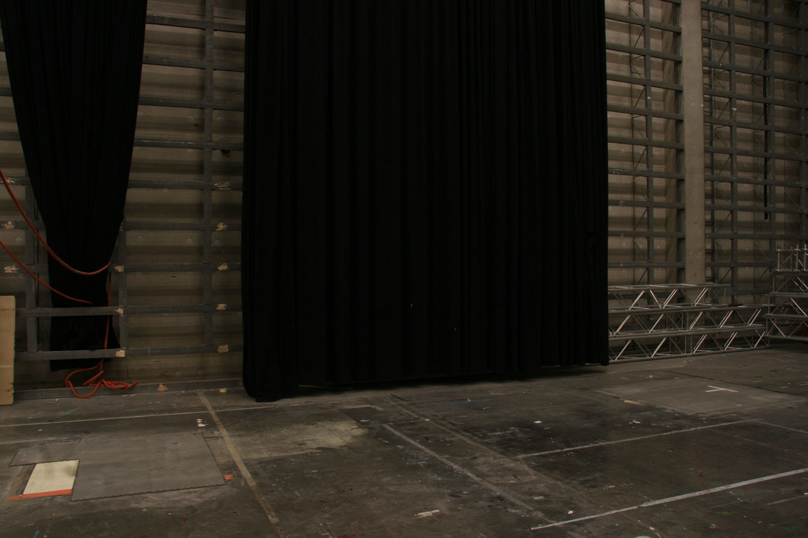
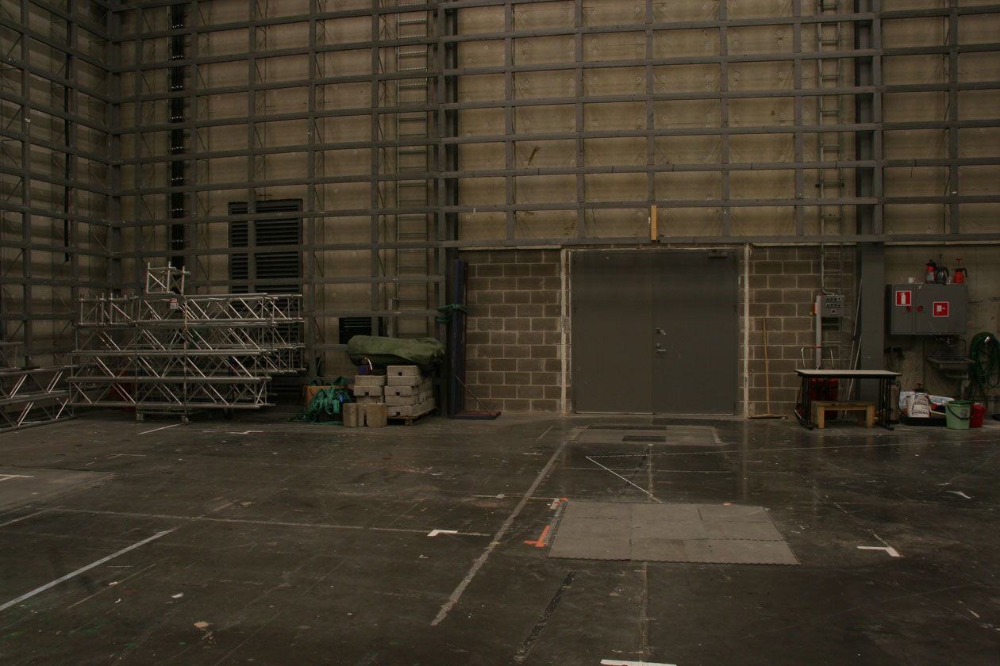
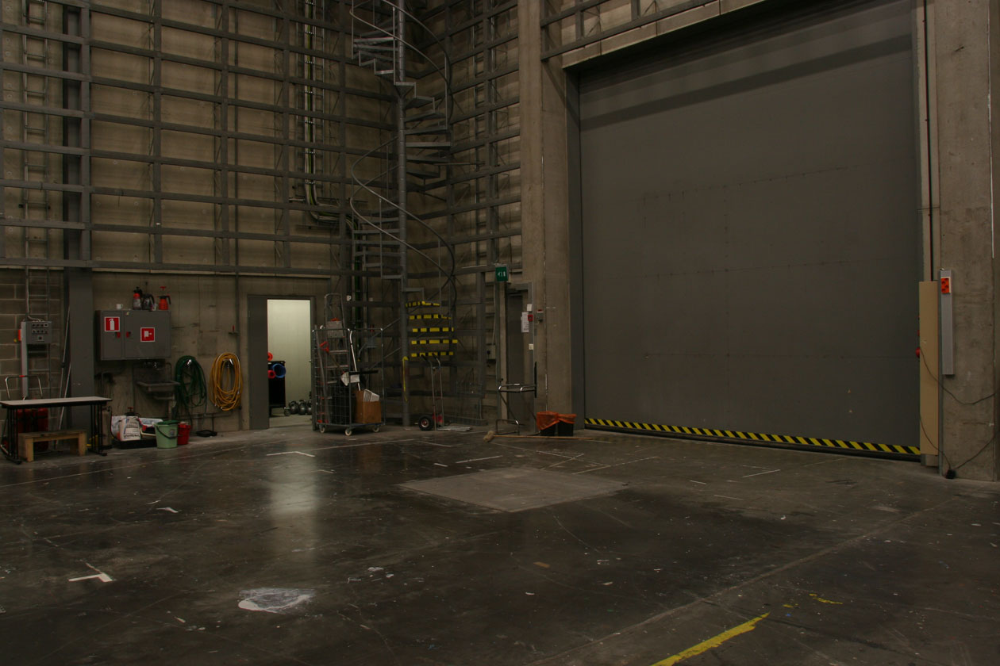
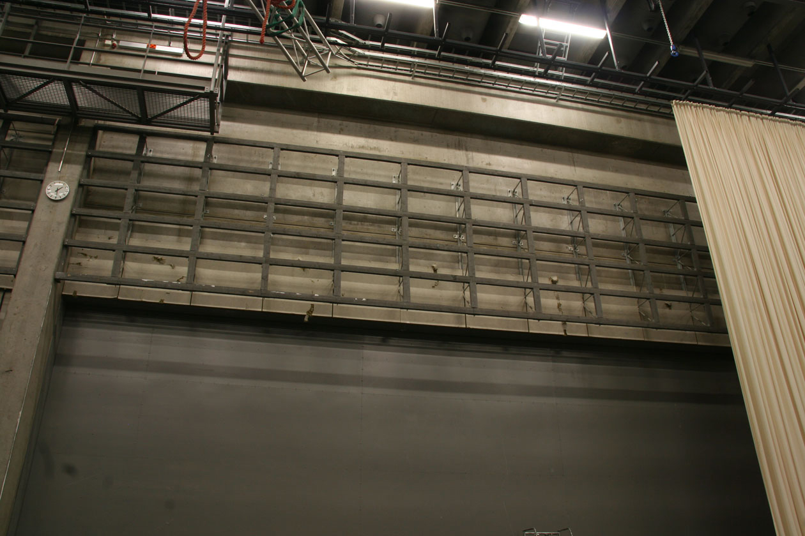

Ylälämpiö ja Galleria
Ylälämpiö
Soveltuu käytettäväksi yhdessä Sampo-salin kanssa lämpiönä sekä lounas-, esittely- ja juhlatilana. Buffet–tilaa noin 400 henkilölle, 70 henkilölle tarjoilukattaus.
koko ja mitat
418 m2, korkeus 5,3 m
varustus
Vakiokalustuksena korkeat pöydät (13 kpl), sohvapöydät (5 kpl), penkit (14 kpl), konferenssitiskit (3kpl), ilmoitustaulut (3 kpl).
Erikoisjärjestelyin lisäkalustoa
lisä- ja aputilat
Catering-keittiö laitteineen (lämmitysuuni, kahvinkeitin, astianpesukone), 10 kpl kylmäkaappeja
sähköt
2 x 63A; 2 x 32A –sähköliitännät
Erikoisjärjestelyin verkkoyhteydet ja äänen- ja kuvantoisto.
Kulku Sampo-saliin ja Studionäyttämölle
Galleria
Taide- ym. näyttelyt, erilaiset kulttuuritapahtumat ja muut tilaisuudet. Lasikatettu galleriakäytävä, joka soveltuu käytettäväksi erilaisiiin taide- ym. näyttelyihin ja kulttuuritilaisuuksiin.
koko
185 m2
mitat
Leveys 5 m, pituus 37 m, korkeus 5,3 m
ripustus
Ripustus kattoon tai seinissä oleviin ripustuskiskoihin (n. 3m korkeudessa). Ripustuspinta-ala n. 370m2
sähköt
Ylälämpiöstä 2 x 63A/ 2 x 32A – sähköliitännät
Erikoisjärjestelyin verkkoyhteydet ja äänentoisto
Käynti Taik:n pääoven kautta (C-porras).
Kulku Ylälämpiöön, Sampo-saliin ja Studionäyttämölle
Nähdäksesi tämän tarvitset JavaScript-tuen.
- 
- 
- 
- 
- 
- 
- 
- 